Chapter Ten
Men; Mathematics; and Machines
page 150123. In Sections 115 to 119 we traced the steps man has taken in his attempts to make calculation easier. In this final chapter we will see how many of the ideas we have discussed can be applied to his latest mathematical tool, the electronic computer installation. It is called an installation because as you see it is not one machine but a number of linked units. Below I have used a diagrammatic lay-out to show you how information is transferred from one part of the system to another.
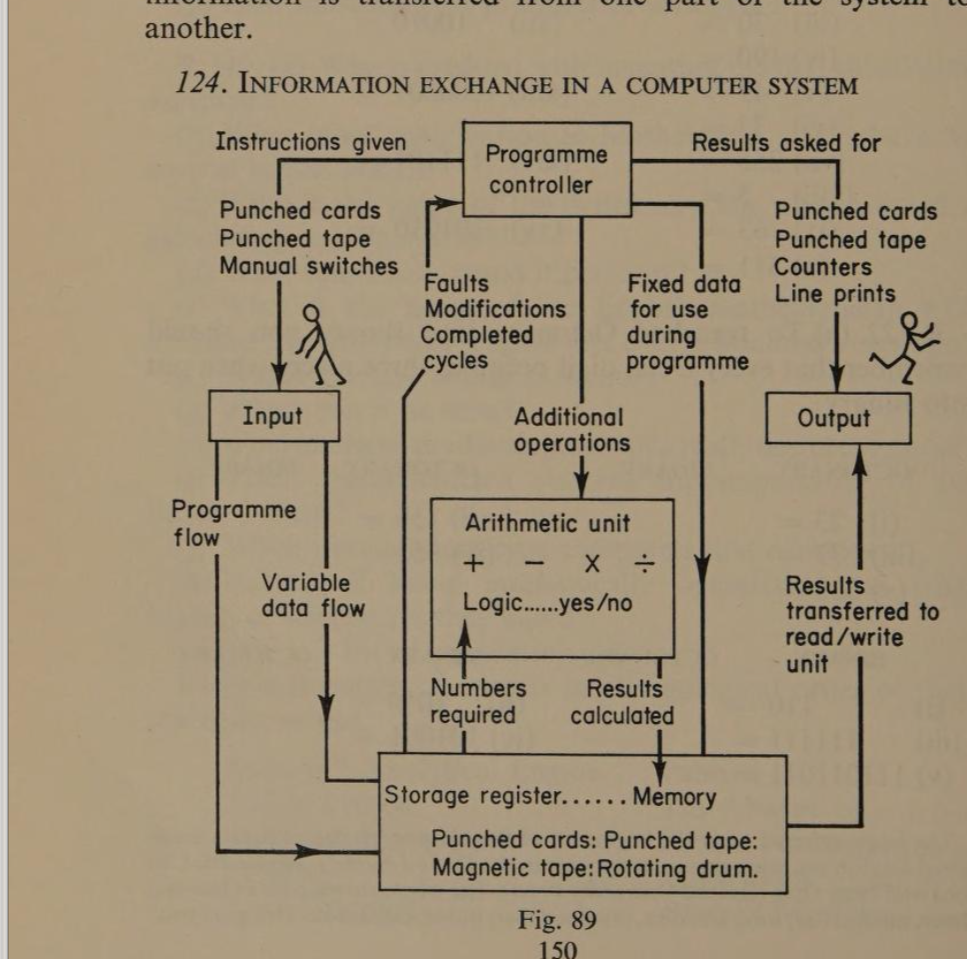
124. Information exchange in a computer system. page 151 These units are connected by electric cable and in a large installation would be housed in one room. It is possible to have some of the units hundreds of miles away in Branch offices which are thus able to make use of the computer.
125. You will have noticed in the diagrammatic lay-out of a computer installation that the actual calculator is only one part of it. It is, of course, a very important part, for it is the unit which is capable of high-speed operation. It can handle over 100,000 letter or number characters per second and could be designed to operate even faster. There are two points in the system where the processes are slowed down. These are the input and the output units, which in one way or another rely on manual intervention.
The problem is essentially one of communication. We have to keep in mind that we and the machine normally use different languages, and before we can give it instructions they must first be transformed into machine language; and in the same way, the results it obtains have to be translated into our language before they can be made use of.
126. Throughout this book there have been two main themes. One was the logic of choice, and the other the representation of numbers by symbols. Regarding the first, we saw that a rational choice is possible only between two alternatives, and the decision can be indicated by the symbols 1 and 0. We have seen, too, that the digits 1, 2, 3, 4, 5, 6, 7, 8, 9, 0 are not the only ones by which we may record numbers of things, and the determining factor is the base or group we choose. There are advantages in using bases other than ten for some purposes, and this is particularly true of the Binary system. In this it is possible to represent any number by means of only two symbols, 1 and 0. Thus, we come to the heart of the matter, for these two symbols precisely match the two states on/off of an electrical circuit, and in this way, modern electronic computers are ideal instruments for dealing with two-state logical situations and numerical calculations.
127. When you or I have a problem to solve, a variety of activities are set in motion. If the problem is a familiar one, such as cutting some bread and butter, we organise our actions so as to produce the desired result. We go to the container and get out the bread; we get the butter from the larder: and the knifepage 152 from the cutlery drawer; and we get a plate to hold the bread and butter after it has been prepared.
Because these activities are familiar we don’t appreciate how complex the mental processes are that govern our behaviour. Have you ever been asked to prepare bread and butter in a strange house? If you have you will have realised how many decisions you have to make, and how impossible the task may be if you are unable to locate only one of the necessary items. The sequence of your behaviour could be described as:
- The comprehension of what is required.
- The collection of the necessary items.
- The performance of the task.
For all these you rely primarily upon your memory. You know what the task is, what you will need, and how to do it. In a strange house you would still know all this, what you may not know is where the items are to be found. Imagine you are in the kitchen of your aunt’s new house and you have been asked to cut the bread and butter. You can’t find the bread-knife and when you ask your aunt, who is in the garden, she says, ‘It is in the middle section of the third drawer.’ When you look you find there are three sections containing:
[1] A bread-knife [2] A spoon [3] A fish-slice
You modify your aunt’s instruction and take out the bread-knife from the first section. This is because you are human and intelligent. The computer would have used the spoon.
128. A computer is a poor substitute for the human brain. Strictly speaking, it has no overall conception of a problem: it can gather together the necessary items only if it is told exactly what they are and where they may be found each time. When these two ‘intelligent’ provisions have been made for it by the human beings who control it, then it can usually perform the mechanical task much faster than they could hope to. Of course, one would never expect a computer to cut bread and butter.
129. page 153 What is called the ‘memory’ of a computer is a store or register of numbers which are required for a particular problem. If, for instance, the computer were engaged on working out wages, in the ‘memory’ would be stored the rates of pay, the amounts of National Insurance, the Income Tax, and other permanent details relating to all the persons employed by that particular firm. These details can be recorded on magnetic tape,
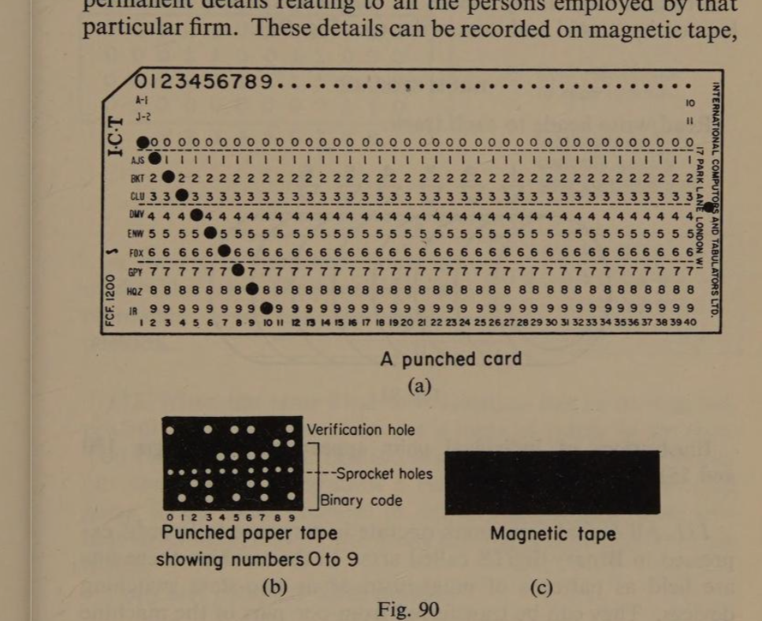
or on punched cards, or on punched paper tape, or on a magnetic revolving drum. What is of vital importance is that each number must have a definite location in the register (usually called its address) so that the programmer can instruct the computer precisely as to where the detail may be found.
130. If you have ever used a tape recorder you will know that every note of music and every syllable of speech is held on the magnetic tape in a certain position. By the ingenious use of the counter it is possible to locate a particular point in the recording. Numbers, stored as magnetised spots, can be located by the computer, but care must be taken to ensure they are recorded in the correct sequence, as once any particular spot has passed the reading head it will not be available again until the spool canpage 154 be re-run. This ‘slow access’ time, as it is called, applies also to punched tape, as it, too, can be ‘read’ only in a set order. Information is more readily available from a revolving drum. Rotating at 5,000 revs. per second it makes any piece of information available 5,000 times every second.
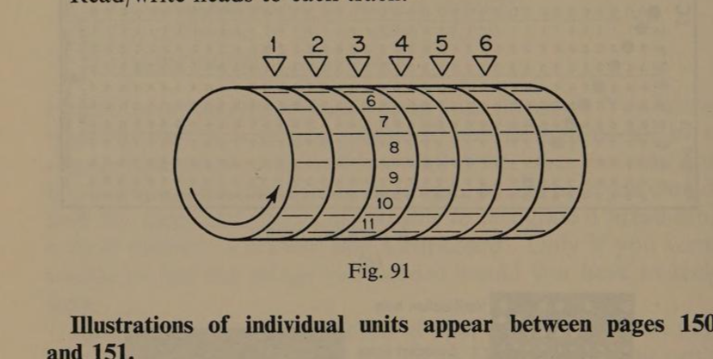
Drum storage is by means of magnetised spots which are located by ‘track’ and item order (see Fig. 91). Illustrations of individual units appear between pages 150 and 151.
131. All digital computers operate in response to ‘words’ expressed in Binary digits. In the machine these bits are held as patterns of magnetism or as two-state switching devices. They can be transferred from one part of the machine to another as electronic pulses at the rate of 1,000 per second (kilocycles) or, sometimes, 1,000,000 per second (megacycles). Many codes are used as machine language. The simplest binary coding used here could be as many as 40 bits to a word; the maximum decimal capacity is thus 1,099,511,627,775.
page 155 This ‘word’ represents the total shown, but part of the word is generally an instruction as well as a quantity. When a Decimal/Binary coding is used, each Decimal digit consists of 4 bits read simultaneously, each column being read in sequence. A system of punched holes is used in this way: the punched hole represents 1, while the unpunched represents 0 in the appropriate position. The maximum decimal capacity equals 999,999,999,999.
132. When the same kind of calculation has to be done repeatedly it is useful to make out a table of values in advance. You remember we did this in paragraphs 57–59 and then used our prepared values to draw a ready reckoner graph. We are going to do some exercises in converting numbers from one base to another, and we will find a table of prepared values very useful. Copy and complete these tables.
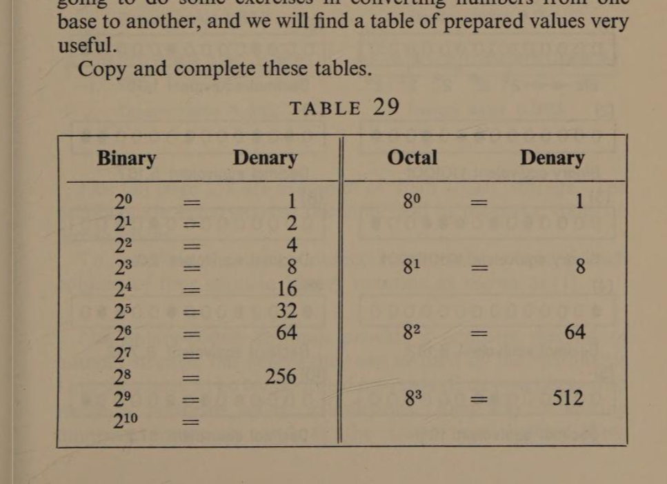
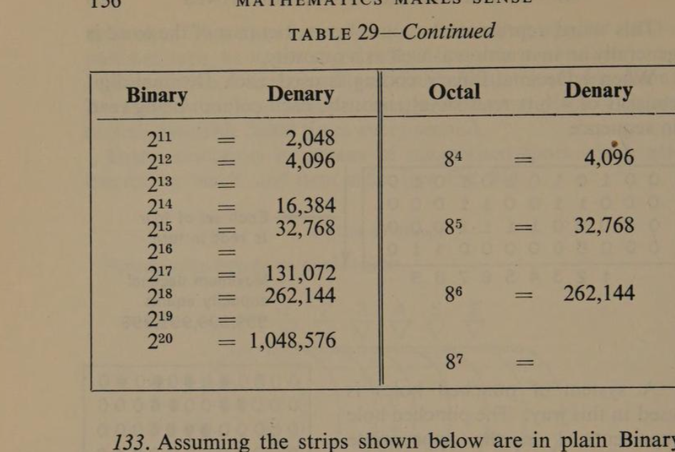
133. page 156 Assuming the strips shown below are in plain Binary code, every punched hole (●) represents the appropriate power of 2, as shown in the first example. Each one should be studied to make sure you understand how the number digit is represented by the punched strip. In this coding, the unpunched holes represent zero and the punched holes represent the symbol 1.
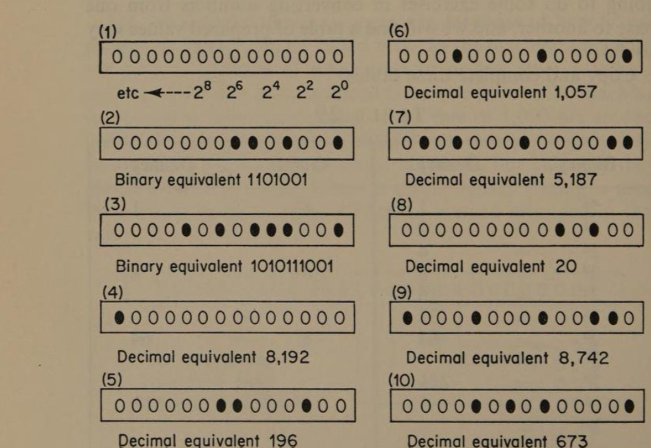
134. page 157 We saw in Section 122 that numbers in Binary code were easily translated into Octal by finding the value of each triad of binary digits. The strips shown below are punched in Binary coding and the Octal digits are printed underneath each triad of Binary numbers. The equivalent Denary values are also given. When checking these remember each group of three Binary places gives the value of the Octal digit. Consult Section 132 to convert Octonary to Denary.
135. On page 158 are examples of ‘high access’ storage. The numbers are Binary-coded decimals as magnetic spots on ferrite plates. To translate them into numerals remember to read each column of four spots in Binary notation as shown at [1].
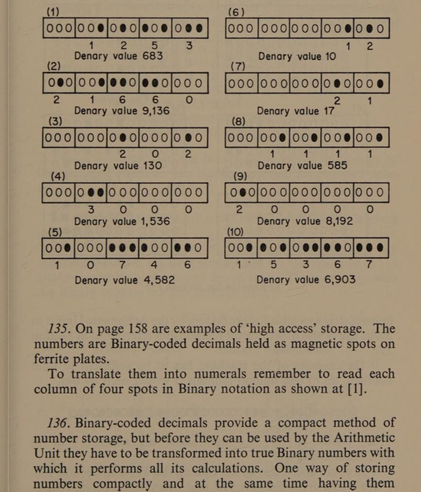
136. Binary-coded decimals provide a compact method of number storage, but before they can be used by the Arithmetic Unit they have to be transformed into true Binary numbers with which it performs all its calculations.page 158
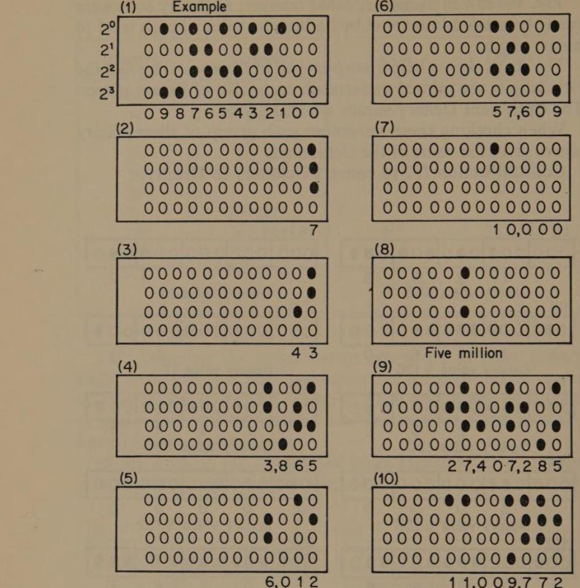
One way of storing numbers compactly and at the same time having thempage 159 immediately available for processing by the Arithmetic Unit is to make use of the Binary/Octal relationship referred to in Section 122. If the capacity of the machine has to be sufficient to hold numbers up to one million millions it would need 40 bits. This ‘word’ of 39 bits can show all numbers up to 549,755,813,887. You could check this by continuing the Table in Section 132. We know from Section 122 that every three Binary places can be evaluated to give an Octal digit.
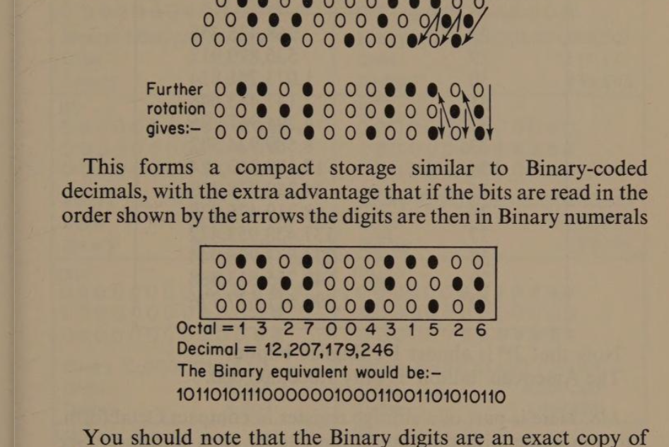
137. Here is the continuation of the Conversion Table given in Section 132. You will find it useful for checking the examples of storage numbers shown in the next section and for the exercises in the final programme at the end of this chapter. The numbers under the Binary column are the ‘powers’ of 2.
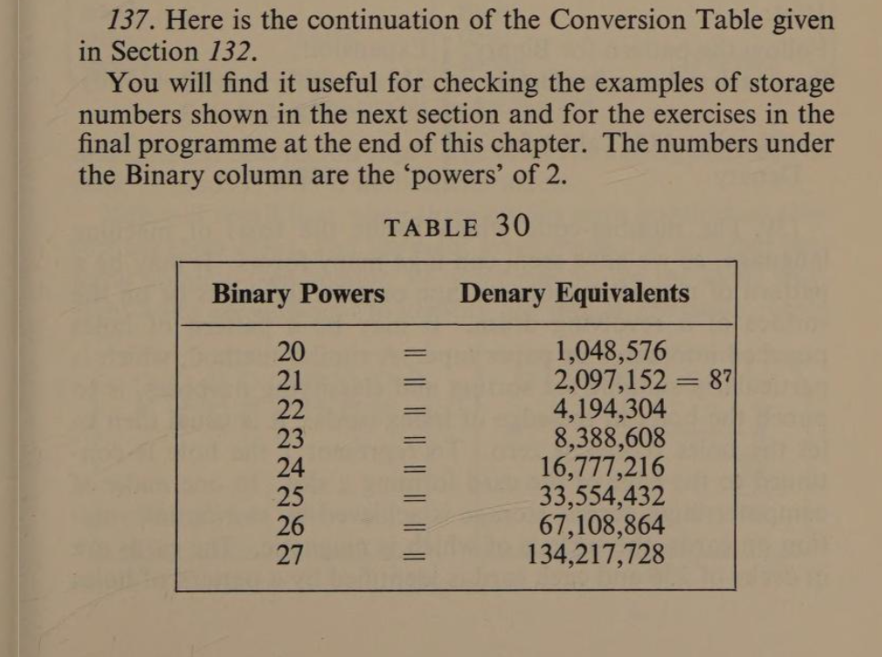
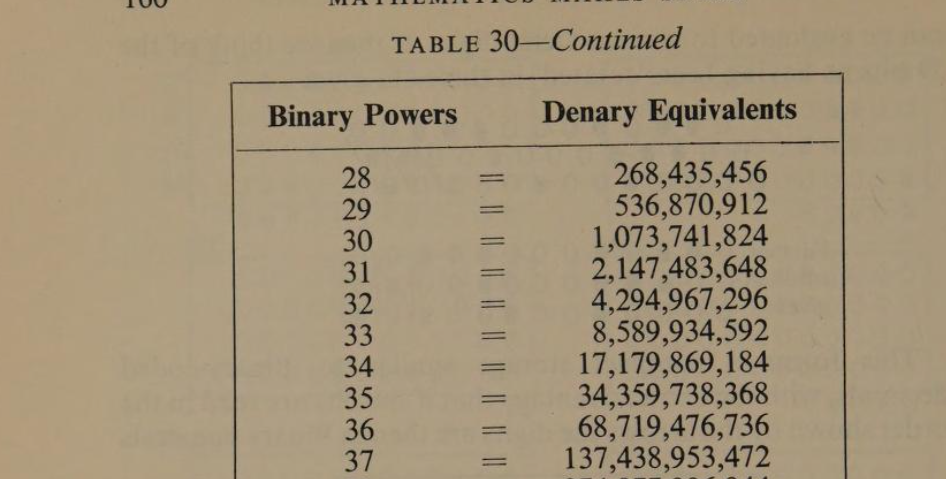
page 160 Note that 2⁴⁰ is almost 1·1 English billion. The American ‘billion’ is only 1,000,000,000.
138. Here is part of a storage register in compact Octal form. Do you agree with the translations under each location? See opposite. Complete the translations of Nos. 4 and 8.
Hint: Follow the pattern for Binary. Sum each column for Octal. Use Section 132 (Table) for Denary. Expansion: 213₈ = 2(8²) + 1(8¹) + 3(8⁰) = 128 + 8 + 3 = 139₁₀.
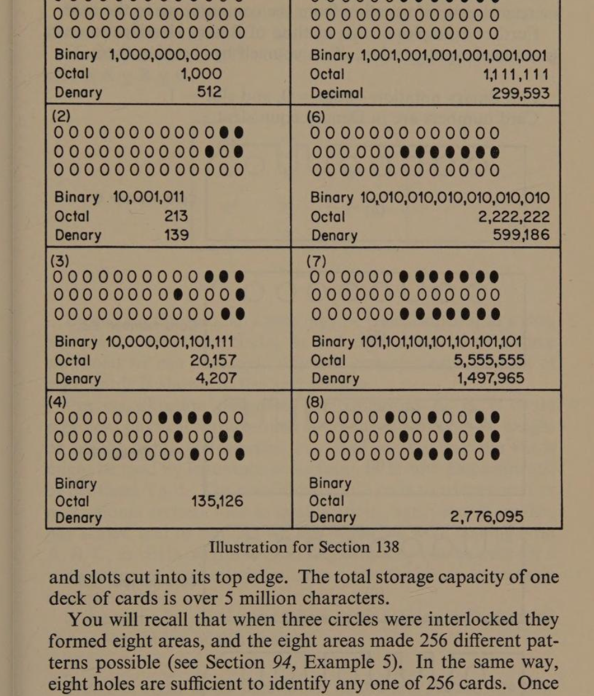
139. page 161 The number-code which forms the basis of machine language, as we have seen, can take many forms. It may be a pattern of magnetic spots on tape or metallic sheets or on the surface of a revolving drum. It may be a pattern of holes punched into cards or paper tape. Another method, which is particularly suitable for sorting and classifying purposes, is to punch the holes in the edge of index cards. It is usual then to let the holes represent zero. To represent 1 the hole is continued to the edge of the card forming a slot. The cards are in decks of 256 and each card is identified by a pattern of holes and slots cut into its top edge.
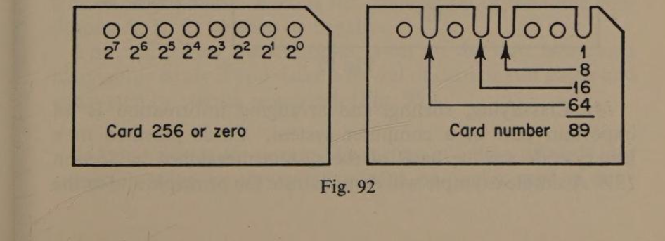
You will recall that when three circles were interlocked they formed eight areas, and the eight areas made the different pattern possibilities (see Section 94, Example 5). In the same way, eight holes are sufficient to identify any one of 256 cards. Oncepage 162 the correct card has been selected it can be carried round a read/write mechanism which will transmit information to the computer or record new information from the computer on to the card.
140. Binary notation—hole = 0, and slot = 1. Card numbers are in Denary equivalent.
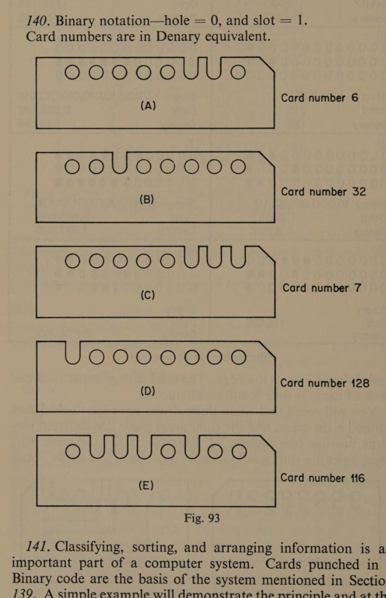
141. Classifying, sorting, and arranging information is an important part of a computer system. Cards punched in a Binary code are the basis of the system mentioned in Section 139.page 163 Here is a simplified card-index containing only three conditions. The holes indicate 0 and the slots represent 1. If each position is A, B, or C, each hole is A′ ∨ B′ ∨ C′ and each slot is A ∨ B ∨ C.
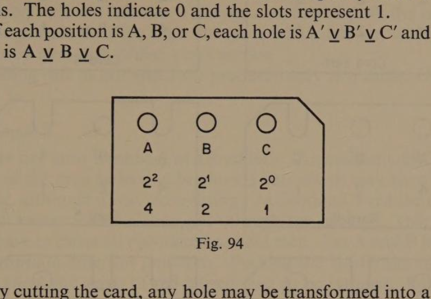
By cutting the card, any hole may be transformed into a slot, and just as with three circles we had eight areas, so with three slot/holes we can have eight different arrangements. The set of eight cards is shown in the next section.
142. The eight cards mentioned in the last section are illustrated on page 164. Each is the conjunction of the three conditions A, B, C, positive and negative. You will follow the examples given on the next two pages much more easily if you make a set out of card or stiff paper and use it step by step as suggested.
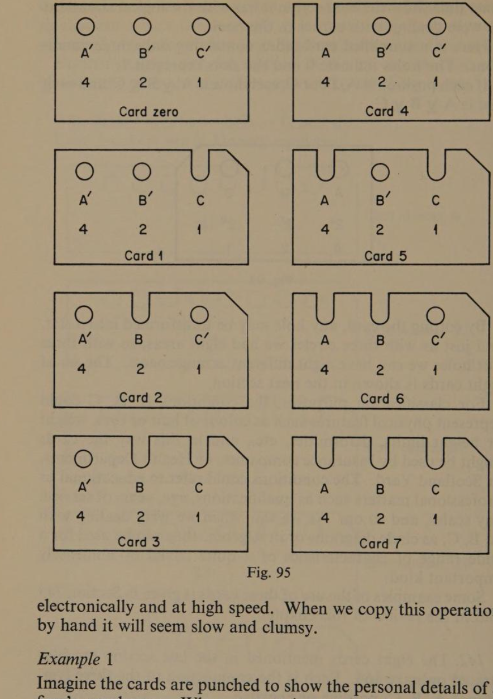
143. In a computer system, the sorting of a deck of cards into a special order, or the isolation of a particular card is donepage 164 electronically and at high speed. When we copy this operation by hand it will seem slow and clumsy.
Example 1. Imagine the cards are punched to show the personal details of a firm’s employees. When a man is married the first hole is slotted; and the second hole is slotted when he has completed fifteen years service. A manager is to be appointed to a new branch where it will be necessary to entertain important clients. The Directors of the firm decide that the new manager shall be appointed from among the men on their staff who are married and have atpage 165 least fifteen years service. Eligible candidates could be selected by: Push the needle through hole A and lift. The cards of all the married men will fall out. Take these cards and push the needle through hole B. This time the cards which fall out will be of married men with fifteen years service. Doing this to our small set produces only two cards, Nos. 6 and 7.
Example 2. There has been a robbery at a jeweller’s. An assistant describes one of the men as having bright-red hair which may have been a wig, although it was close-fitting. At Scotland Yard the cards of all known criminals are put through the selector. This time we have to select all red-haired or bald men. Let A and B be the appropriate hole/slot positions. Pushing the needle through A will allow the cards of red-haired men to be isolated. Pushing it through hole B of the rest of the cards will find additionally the cards of bald-headed men. When we try this we get cards Nos. 2, 3, 4, 5, 6 and 7. There is something odd about the last two cards. Can you say what it is?
144. Both previous examples were two-conditional propositions. Here is one governed by three conditions. Men of the United States Air Force are required for training as astronauts. Assume that in the punched-card personnel files, hole A is slotted when a man reaches the age of forty; hole B is slotted when he has completed 1,000 flying hours; and hole C is slotted if he has had a university education. If the regulations are that potential astronauts must be under forty at the start of their training and must have done 1,000 hours’ flying time and must have been to a University, then a first selection list could be compiled in a similar way.page 166 With our set we would get only card No. 3.
145. You may have found the problems easier to follow and almost certainly easier to solve when they were expressed in Algebra. The contradiction we saw in Example 2 was due to our using the different hole positions for characteristics which were mutually exclusive. As it was we could have got out of our difficulty by treating it as a case of A ⊻ B. Why is it unlikely that a case of such a contradiction would arise in a real file?
146. Let us use Example 2 from Section 143 as a demonstration of the way to select a case of the exclusive disjunction, i.e. A ⊻ B. When we push the needle through A, the cards divide into sub-sets, those containing A and those not containing A. If we take the first lot and reject any containing B by pushing the needle through B and retaining only those which do not fall, we will have one lot which are A but not B, i.e. AB′. We know the second lot does not contain any A because we removed them all the first time. What we want from this sub-set is all the cards which are B. Those which fall are A′B. The two selections are then merged. You may remember from Section 86 or Section 101 that A ⊻ B = [AB′ ∨ A′B]. This equivalence is confirmed by the behaviour of the cards. When we thus operate on our set cards Nos. 6 and 7 are rejected.
147. It would be useful to make a list of this selection procedure for future reference.
- Perform an operation on one condition at a time (making a rational rather than a random choice).
- If the effective condition is positive, the cards required fall.
- If the relationship is ∧, perform the second operation on the effective cards only.page 167
- If the relationship is ∨, perform the second operation on the previously ineffective cards, and combine those which were selected first time with those which were selected this time.
- If the required relationship is ⊻, select the effective cards of the first condition and apply to them the complement of the second condition. Select the effective cards from the first lot of rejects by applying to them the second condition. Merge both.
- If brackets are employed in the algebraic relationship, find the effective cards from the bracketed conditions before applying the external condition.
148. As we haven’t demonstrated the card selection procedure for bracketed relationships, let us try one now. If the regulations governing the eligibility for housing tenancy were that ‘applicants must be married and either have been born in the neighbourhood or have resided there for not less than five years continuously up to the time of applying’ this would be a case of A ∧ [B ∨ C]. Assume that applications are filed by means of a punched-card system in which the first hole is slotted for married applicants, the second hole is slotted if the applicant is a native of the neighbourhood and the third hole is slotted after five years’ continuous residence. When a housing estate is ready for occupation the list of eligible persons could be compiled by:
- Spearing hole B and putting those which fall on one side.†
- Spearing hole C in the remaining cards and combining those which fall this time with those which fell the first time.†
- Taking the combined effective sub-sets and spearing hole A. Only those which fall this time are eligible.†
With our test pack we get cards Nos. 5, 6 and 7.
† In a data processing installation this would be done by a card-sorting machine which ‘senses’ the presence of a hole in the card.
149. Finally, let us compare the four ways we know of representing a conditional proposition.page 168
- Verbally: ‘Applicants must be married and be eligible by birth or five years’ continuous residence in the neighbourhood.’
- Algebraically: A ∧ [B ∨ C] = 1.
- Diagrammatically (see Fig. 96 (a)).
- Punched Cards (see Fig. 96 (b)).
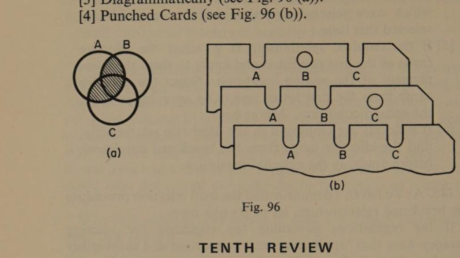
Tenth Review
R.123. (a) What is the mathematical ‘tool’ referred to in the paragraph?
(b) Why is it called ‘An installation’?
R.124. (a) How are the units connected?
(b) ‘All the units must be close together.’ Say whether this statement is true or false.
(c) What two kinds of intervention are ‘fed’ into the assembly via the input unit?
(d) What is the calculating unit called in the diagram?
(e) What two kinds of activity is it capable of?
R.125. (a) When a lot of traffic converges on to a narrow road from a major road there is usually a jam. This is sometimes described as being caused through a ‘bottle-neck’. Where is the bottle-neck in a computer system likely to be?
(b) What is the major problem referred to?
(c) What is meant by the term ‘machine language’?
(d) What language is used to communicate with the machine?
R.126. (a) Is it possible to represent any number by means of 1 and 0?
(b) ‘Two conditions are effective only together.’ Express in Algebra.
(c) Now express this in Algebra: ‘A given proposition is ineffective if either of two conditions occurs.’
(d) What is it about the operation of an electronic computer that makes it an ideal instrument for [1] calculating in the Binary system, and [2] choosing between two alternatives?
(e) State the number of dots in the diagram using the Binary notation.
R.127. (a) What main function of the mind do we rely on when we are first confronted by a problem?
(b) What single word is used to mean ‘understanding the problem’?
(c) What other two functions are necessary?
(d) How does a human mind deal with an obviously wrong instruction?
(e) We were told that the computer would have ‘used a spoon’. In some computers there are built-in safeguards against certain types of error. Who provides these safeguards?
R.128. (a) Is a computer intelligent?
(b) Who provides the intelligence required for solving problems?
(c) What advantage has the computer over the human brain?
R.129. (a) What is the ‘memory’ of the computer?
(b) Name three ways in which facts are stored in the computer.
(c) What is the name given to the location of a number in store?
(d) How is the computer instructed where to find the number—[verbal instruction] [binary code] [logarithm table]?
R.130. (a) In what form are facts stored on magnetic tape?
(b) What precaution has to be taken when using tape as a memory store to avoid loss of time?
(c) In the diagram of a revolving drum by what track and item number would the item under the third read/write head be located?
R.131. (a) Which has the greater capacity, a twelve-digit denary number or 40 bits? (See page 160.)
(b) What is the difference in Denary notation?
R.132. page 170 (a) Evaluate: (1) 2⁷; (2) 2¹⁶; (3) 8⁷.
(b) What power of 8 equals 2¹²?
(c) What power of 2 equals 8⁷?
(d) What power of 8 yields the same result as 2³⁰?
(e) What power of 2 yields the same result as 8²⁰?
R.133. (a) These punched strips are in Binary coding. What Denary number does each represent?
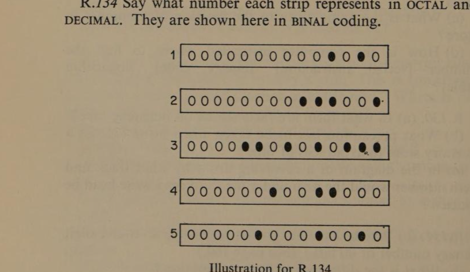
(b) Draw a punched strip showing how each of these Denary numbers would be represented in binary: (i) 128 (ii) 19 (iii) 85 (iv) 511 (v) 8,193
R.134. Say what number each strip represents in octal and decimal. They are shown here in binal coding.
R.135. page 171 (a) These are diagrams of high access storage plates in Binary-coded decimals. Copy them and in Nos. (i) to (v) write the Denary number each represents underneath.
(b) Copy Nos. (vi) to (x) and show the positions of the magnetic ‘spots’ which would represent the numbers given.
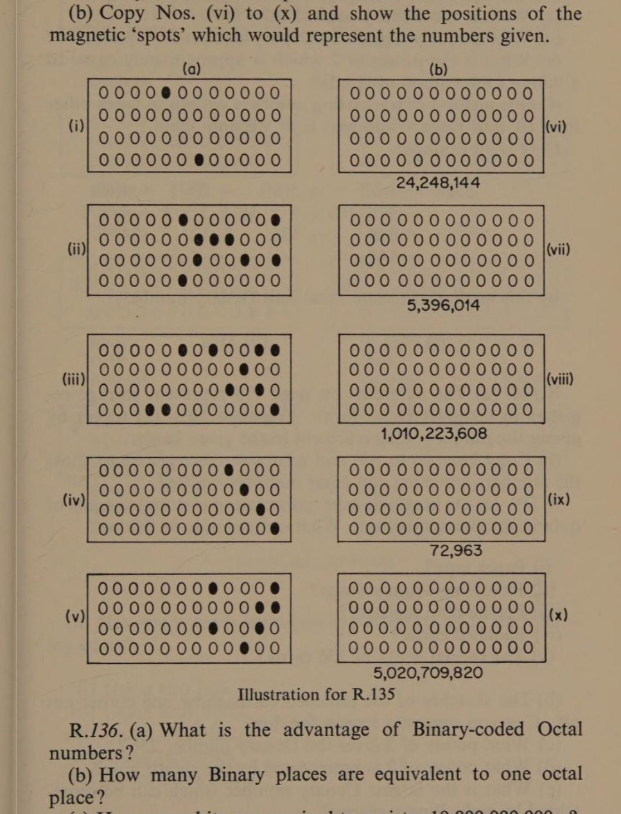
R.136. (a) What is the advantage of Binary-coded Octal numbers?
(b) How many Binary places are equivalent to one octal place?
(c) How many bits are required to register 10,000,000,000₁₀?
(d) If the columns of an Octal register are read from bottom to top and left to right in sequence, what kind of numbers do they then represent?
R.137. page 172 (a) What power of 8 gives the same result as the 24th power of 2?
(b) What power of two equals the Denary number 33,554,432?
(c) What is the Denary equivalent of 8¹²?
(d) What power of 8 gives the Denary number 68,719,476,736?
(e) What is the power of 2 which is approximately equal to a billion (one million squared)?
(f) One method of translating numbers written in bases other than ten, into Denary numbers is to ‘expand’ them. Here is an example:
3524₈ = 3(8³) + 5(8²) + 2(8¹) + 4(8⁰)
= 3 × 216 + 5 × 36 + 2 × 6 + 4 × 1... [as worked in the text]
By this method translate these into Denary numbers: (i) 247₈ (ii) 316₇
R.138. (a) The diagrams on page 173 represent storage registers in compact Octal form. Translate Nos. (1) to (4) by giving the numbers they represent in the given bases.
(b) Copy Nos. (i) to (iv) and complete the registers to show the numbers indicated and enter numbers omitted.
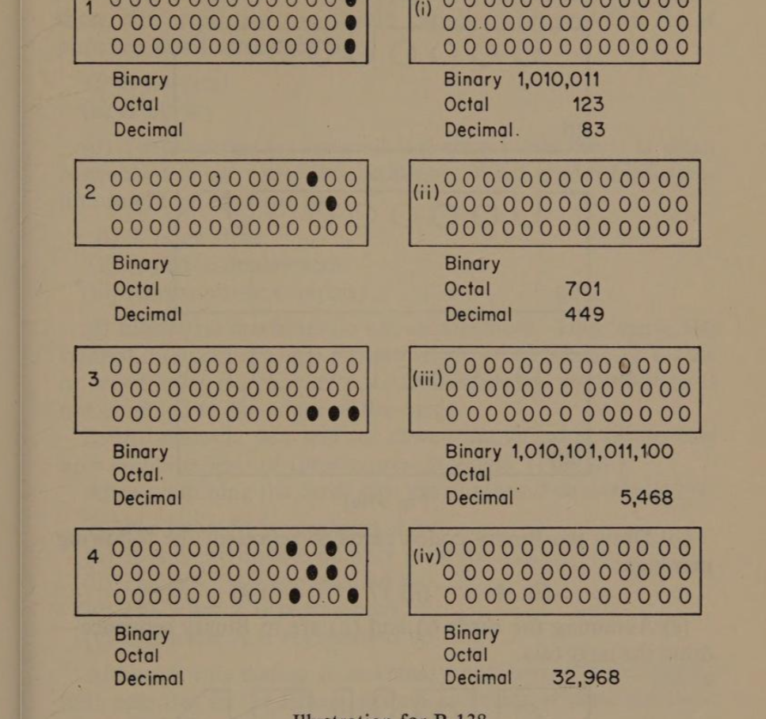
R.139. (a) On magnetic tape, information is stored as spots of polarisation or magnetism. What corresponds to this on: (i) Paper tape? (ii) Revolving drum storage? (iii) Ferrite-core registers? (iv) Punched cards? (v) The special decks of 256 cards?
(b) The sketches of the punched cards show one corner cut off. Can you suggest a reason for this?
(c) What power of 2 gives the Denary number 256?
(d) What power of 2 is represented by the eighth hole?
(e) What is the largest Denary number which can be represented by eight Binary places?
(f) How is the number made up to 256 cards if 2⁸ = 128?
(g) Using 0 for holes, and 1 for slots, write in Binary notation the form of the next card after No. 89 shown in Section 139.
R.140. page 174 (a) Assuming cards (i), (ii), (iii) are Binary coded say what denary numbers each represents.
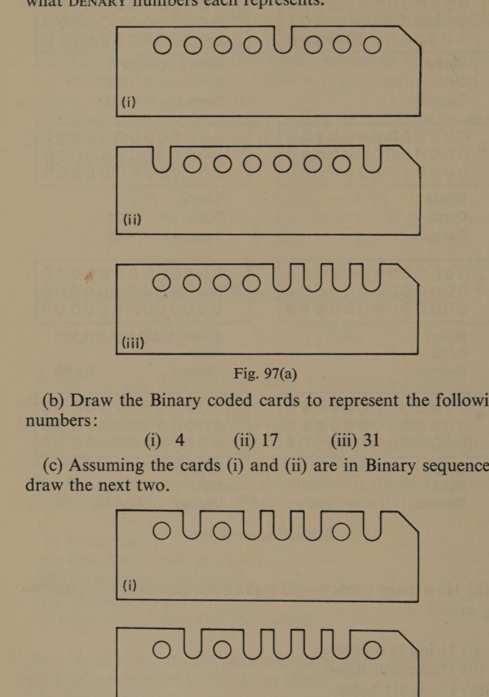
(b) Draw the Binary coded cards to represent the following numbers: (i) 4 (ii) 17 (iii) 31
(c) Assuming the cards (i) and (ii) are in Binary sequence—draw the next two.
R.141. (a) Name other activities of a computer installation besides calculating.
(b) If the 3-hole positions were part of a pupil-index for a school, say what characteristics they might represent.
(c) page 175 Clearly, the significance of the holes and slots will vary according to the use to which the punched cards are put. Give three characteristics you would expect to be provided for if punched cards were used by: (i) A hospital (ii) A library
(d) These categories were all two-state kinds but it is often convenient to use wider classifications. What kinds of information might be required by: (i) A large store (ii) A police department (iii) An insurance company
(e) Electronic machines do not require slots. They ‘sense’ the symbol intended whenever a hole or set of holes is opposite to it. Consequently, the punching is not confined to the edges of the cards. In the example you will see eleven numerical positions and how combinations of these represent letters. (Fig. 98.) After examining the card, give the numerical equivalents for:
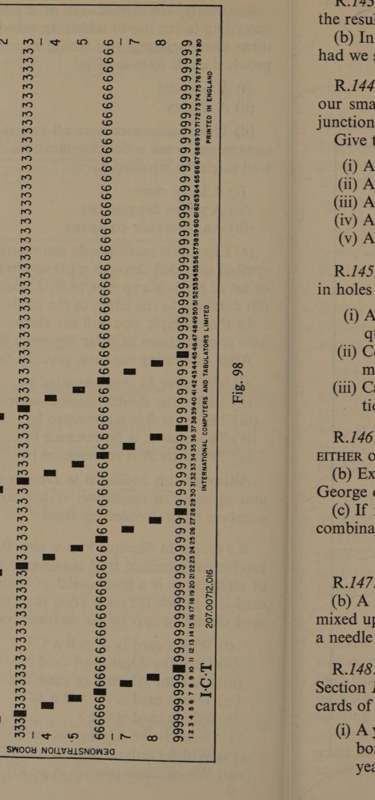
(i) The letter M is represented by ……
(ii) 10/4 is the double number code for ……
(iii) The letter O is represented by ……
(iv) The letter Z is represented by ……
(v) The letter A is represented by ……
R.142. (a) In Section 99 we saw that each single area was precisely determined by 3 conditions in conjunction. If the set of eight cards is a true model of such relationships, and each card is a match for each area, then the slot/hole state of each card should be expressible as three conditions in conjunction:
- Which card is A′ ∧ B ∧ C?
- Give the Algebra of card No. 6.
- Give the Algebra of card No. 4.
- Which card is A′ ∧ B ∧ C′?
- Which card is 0/0?
- What is the Algebra of card No. 7?
- Which cards contain A and C?
- Which cards contain A or C?
page 176 (b) How many cards would make a complete set in the following cases? (i) Using two holes. (ii) Using four holes. (iii) Using six holes. (iv) Using ten holes. (v) Using three holes.
(c) If three holes represent the conditions A, B, C, what part of the circle diagram do the cards match?
(d) What matches the 256 patterns we decided were possible in the 3-circle diagram?
R.143. (a) In Example 1 would it have made any difference to the result had hole B been speared before hole A?
(b) In Example 2 would any other cards have been isolated had we speared B before A?
R.144. (a) As we have only one of each Binary number in our small experimental set of cards, three conditions in conjunction will isolate only one card. Give the numbers of the cards which fit these conditions:
- Age 35; 750 hours; Harvard University.
- Age 49; 2,000 hours; Yale University.
- Age 27; 1,500 hours; High School.
- Age 35; 1,200 hours; Princetown University.
- Age 48; 750 hours; Chicago University.
R.145. (a) Say how you would code the following conditions in holes and slots:
- Applicants must be: unmarried; under 35; suitably qualified in mathematics.
- Competitors must be: under 21; not a previous winner; member of a Youth Club.
- Candidates must be: over 18; receiving full time education; offering at least three subjects.
R.146. (a) Write the symbol which indicates a relationship of either or both.
(b) Express in Algebra: Betty was determined to marry either George or Harry.
(c) If it was required to find a card in which the effective combination was AB′C write the hole/slot positions: A = B′ = C =
R.147. (a) Detail a method of isolating the card, AB′C.
(b) A pack of eight 3-hole Binary-coded cards have become mixed up. Invent a method of mechanical sorting by means of a needle to get them into sequence.
R.148. (a) page 177 Read through the conditions of tenancy quoted in Section 148 and say what the hole/slot pattern would be on the cards of these applicants:
- A young man of 23 who is engaged to a local girl. He was born here but his parents left the district when he was 3 years old and he returned a year ago.page 178
- His fianée who has lived in the district only for the past ten years.
(b) Are either of them eligible?
(c) What would make them both eligible?
R.149. Copy the set of basic diagrams below:
(a) Shade each one to represent the Algebra given.
(b) Give for each the card numbers selected from Section 142.
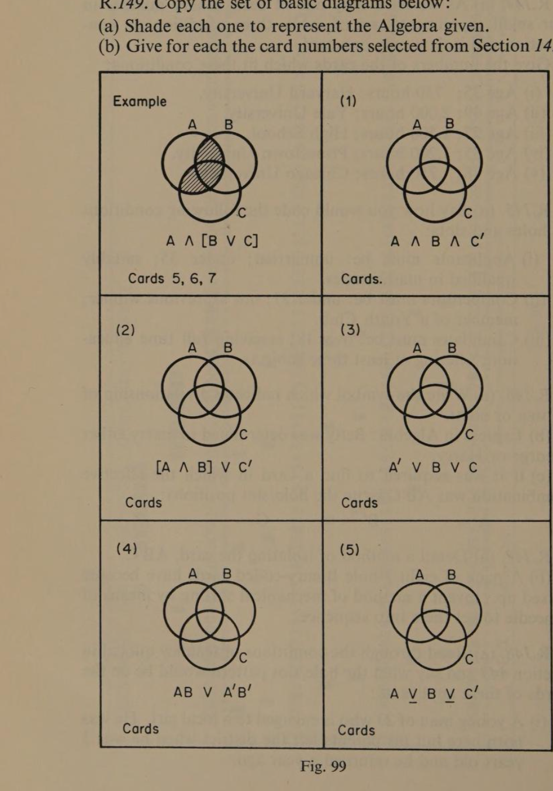